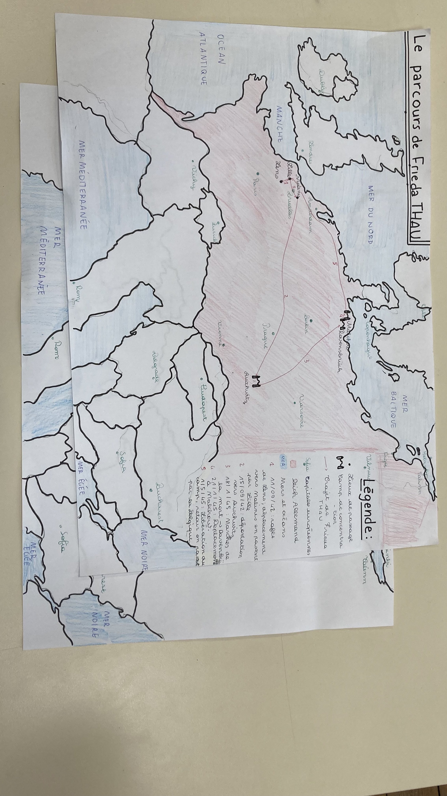

La carte
Description :
Au cours de sa déportation, Frieda Thau a parcouru de nombreux kilomètres au sein du Reich. Son parcours fut agité depuis la rafle du 11 septembre 1942. Frieda Thau est arrêtée à Lens et passe par la gare de Lille-Fives avant d'être déplacée au camp de transit à la caserne Dossin à Malines (Belgique). Elle y passe quelques jours avant d'être déportée à Auschwitz.
En janvier 1945, suite à la progression des troupes soviétiques, les marches de la mort mènent Frieda à Ravensbrück puis à Malchow. De là, elle est libérée par les soviétiques quelques mois plus tard. Elle est rapatriée par les américains en Hollande puis en Belgique pour enfin rentrer à Lille en France où elle retrouve sa sœur.
